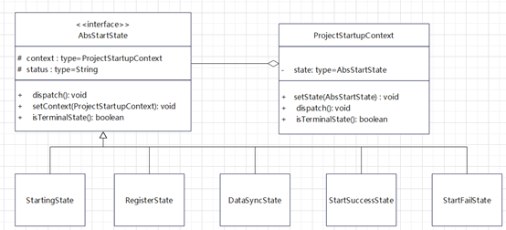
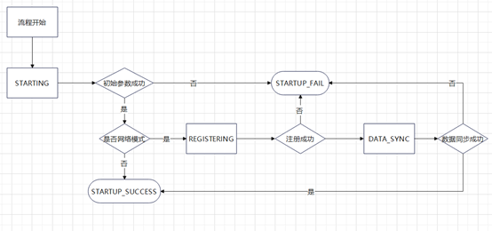

设计模式实战之状态模式
系统启动阶段需要完成一些准备工作，最初是通过Spring Application Runner来实现，实现思路用业务语言描述就是：
- 首先进行启动参数准备
- 判断是否需要注册主站，如果需要则注册
- 判断是否需要进行数据同步，如果需要则同步数据
- 等待数据同步完成，系统准备完成
这种设计可以从某种程度上理解为责任链模式，四个Runner组成了一个责任链，流转到对应的节点判断是否属于该节点的责任并采取动作。
问题反思
这样的启动流程设计和Spring容器耦合严重导致了可复用性不是很好，并且面向流程的设计不具备可扩展性。如果我们在RegisterRunner中由于网络原因没有注册成功，我们期望的结果是重新注册而不是重启Spring应用。
我们发现在Runner对应的过程中体现的是状态的转移，例如RegisterRunner对应的是正在注册到注册成功或者注册失败状态的转移。而状态的转移又反映在类行为的变化。这正是状态模式适用的场景。
当一个对象的内在状态改变时允许改变其行为，这个对象看起来像是改变了其类。
详细设计
首先结合业务逻辑定义了如下几个状态：
| 状态名 | 状态描述 |
|---|---|
| STARTING | 正在启动 |
| REGISTERING | 正在注册主站 |
| DATA_SYNC | 正在进行数据同步 |
| STARTUP_FAIL | 启动失败 |
| STARTUP_SUCCESS | 启动成功 |
| UNKNOWN | 未知状态 |
基于状态模式可以得到系统类图设计：
在 ProjectStartupContext 中定义的dispatch方法负责逻辑处理和状态转移，通过isTerminalState方法来判断是否终结状态并结束流转。结合定义的启动模式和类图设计得到的状态转移流程图如下：
从状态角度考虑每个状态都需要包含自身的职责和状态的流转逻辑，STARTING状态的职责是进行启动参数初始化，如果初始化失败则直接流转到启动失败状态；如果初始化成功并且是网络模式，则进入主站注册状态，如果是单机模式则直接启动成功。
REGISTERING状态的职责是进行主站注册，如果注册成功则进入数据同步状态，注册失败经过重连处理后进入启动失败状态。
1 |
|
DATA_SYNC状态的职责是进行数据同步和同步状态跟踪，如果同步成功则启动成功，否则启动失败。
STARTUP_FAIL和STARTUP_SUCCESS这两个属于终结状态不需要进行任何逻辑处理和状态转移操作。
1 | public StartFailState(){ |
在具体的调用中，我们通过一个service( ProjectStartupService.start )来提供状态模式的入口，实现代码如下：
1 | LOG.info("Project Startup Service begin."); |
通过封装使得系统启动准备做到了可复用，首次启动的场景中直接在Application Runner中读取参数，调用start方法；通过状态监测页面观测到系统状态为失败的时候，可以通过页面触发重启。反映到后台逻辑就是重置启动参数，执行start方法。
总结回顾
在上面的例子中，我们利用状态模式对系统启动流程进行了优化重构。
从可扩展性方面看，如果需要增加一个启动动作，如NTP对时，那我们可以通过新增一个状态 [NTP对时]，上游状态是 [注册节点] ，下游状态是 [数据同步]。涉及到的改动是注册节点的成功状态设置由 [数据同步] 改成 [NTP对时] 。
乍看之下不符合开闭原则呀，确实状态模式封装了状态的行为和状态转移在应对新的状态加入时会涉及到原有状态类的修改。我们可以将状态路由单独提取出来，这样符合了封装不变开放变化的设计准则，但同时也会增加复杂度。换一个角度看，状态模式的应用场景大多数是状态类的数量相对固定并且转换规则已经基本确定的场景，通过状态模式实现封装来提高代码的可读性和设计的可复用。